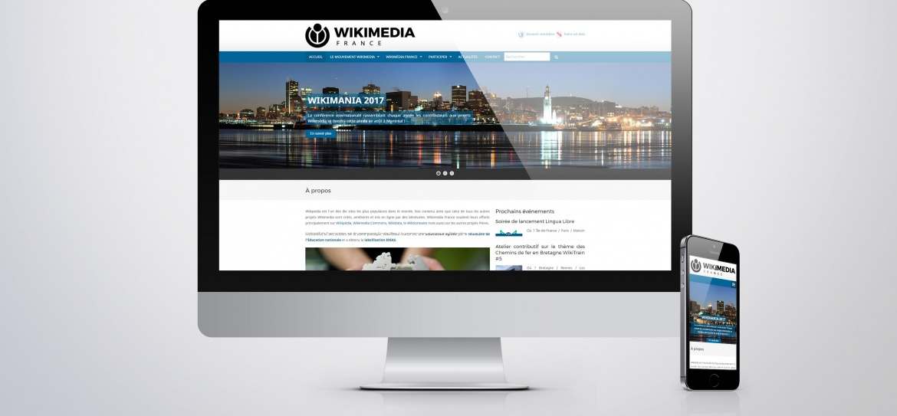

1. Site Vitrine

Il présente votre activité et valorise vos produits ou services, vous offrant une visibilité sur le web. Un site vitrine est souvent un premier pas sur les internets et permet aux utilisateurs de découvrir votre activité. Il permet des interactions claires et directes entre vous et le
public ciblé. Il convient à tous types d'organisations, que ce soit des entreprises, des associations ou des particuliers.
Un site vitrine peut être administrable. Une interface graphique est alors développée pour vous permettre de modifier votre contenu et effectuer des mises à jour selon vos besoins. Dans ce cadre, une formation est envisagée pour vous permettre d'être autonome.